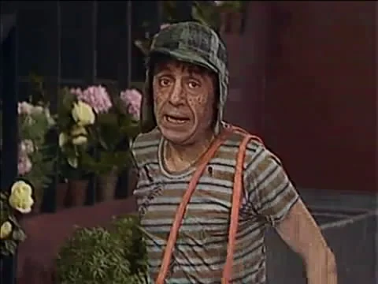

Chaves

Intérprete: Roberto Gómez Bolaños
Dubladores: Marcelo Gastaldi (Chaves clássico) / Sérgio Galvão (Programa Chespirito, BKS), Cassiano Ricardo (Clube do Chaves), Tatá Guarnieri (Gábia e desenho) e Daniel Müller (RioSound e desenho)
Nome Completo: nunca fora revelado. Em espanhol, se diz “Chavo”, que significa “garoto”. É uma forma de dizer que, mundo afora, existem milhares de meninos em condições parecidas com a do Chaves
Caracterização: Menino de 8 anos, com pintas na cara e pouco alimento no estômago
Vestuário: Calça bege pouco abaixo do joelho, desgastadas, furadas, sujas e remendadas, suspendidas por suspensórios amarrados improvisadamente sobre o mesmo ombro, camisa com listras, também remendadas. Um gorro verde quadriculado com uma pequena viseira e orelhas. Usa botinas desamarradas, gastadas e raspadas.
Acessórios: O barril em que o garoto costuma ficar. Ele também utiliza alguns brinquedos, como, por exemplo, um estilingue. Também consta em seu saber grande imaginação, muita fé e todas as células de seu corpo repleta de esperança.
Personalidade: Menino órfão de 8 anos. Mora na casa de número 8, nunca filmada no seriado. É um menino calmo, inocente, brincalhão, porém também tem seu gênio e se defende cada vez que se sente agredido. Chaves é curioso, imprudente e tira a paciência de quem convive com ele. Porém também é sonhador, sensível e sentimental. Tem um carisma muito especial, com o qual faz ganhar o carinho das pessoas que o rodeia. Seus esforços para ser um bom estudante são em vão, já que é um menino distraído e mal alimentado. Quando Chaves se assusta lhe dá um “piripaque”, ou seja, seus movimentos são travados até que alguém molhe seu rosto.
Quando Chaves chora, não grita, ao contrário, chora pra dentro, soltando o ar e dizendo “pi pi pi pi pi”, escondendo-se no seu barril, onde refugia-se pra encontrar a tranqüilidade e a privacidade, já que como todo o menino também tem o seu cantinho especial. Como muitas crianças, ele também tem um “amigo imaginário”, que se chama Cente.
Chaves conhece o valor da amizade por isso se “choca” com os meninos “metidos e riquinhos”. O que Chaves mais gosta de fazer é comer, e é o que menos faz. Em determinado episódio acabou comendo demais e teve um “atravacamento de lancherrose”. Como é pobre, não tem brinquedos e se diverte com o que encontra na mão, por exemplo, um cabo de vassoura, o qual equilibra habilmente com o pé.
A resignação do Chaves é capaz de despertar a compaixão do mais duro dos corações. O anjo de guarda que foi destinado ao Chavinho trabalha em tempo extra e sempre está terrivelmente cansado, mas no final sempre consegue se sair bem livrando esse menino encantador cujo nome ninguéme conhece e por conseguinte o chamam simplesmente de “Chaves”.
Bordões: “Ninguém tem paciência comigo!”; “É que me escapuliu!”, “Tá bom, mas não se irrite”, “Isso, isso, isso”, “Zás, zás, zás!”